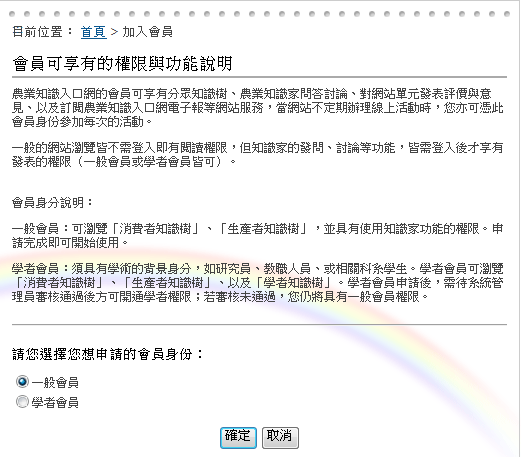
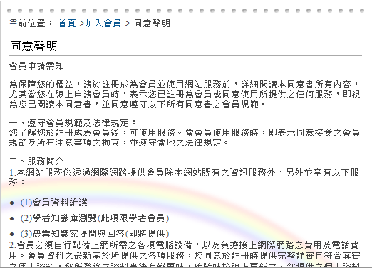
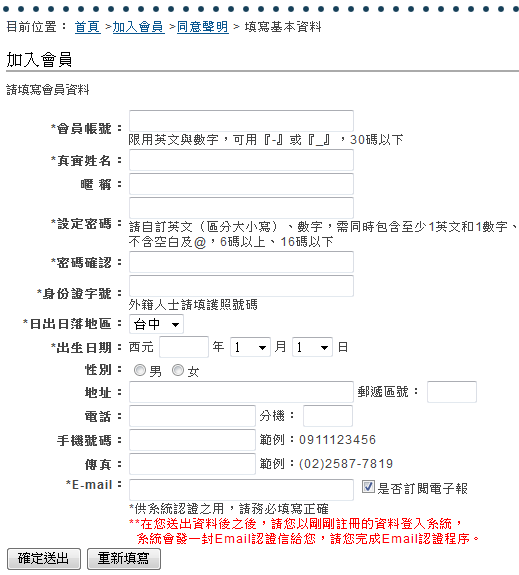
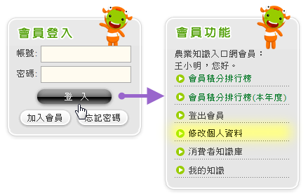
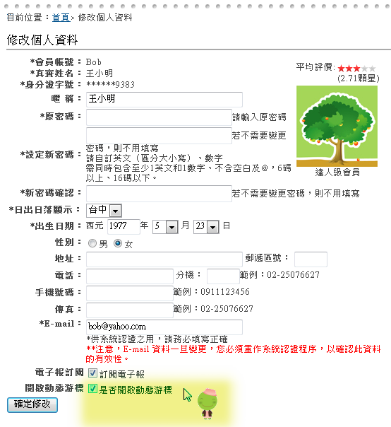

加入農業知識入口網的會員
農業知識入口網的會員可享有分眾知識樹、農業知識家問答討論、對網站單元發表評價與意見、以及訂閱農業知識入口網電子報等網站服務，當網站不定期辦理線上活動時，您亦可憑此會員身份參加每次的活動。
一般的網站瀏覽皆不需登入即有閱讀權限，但知識家的發問、討論等功能，皆需登入後才享有發表的權限（一般會員或學者會員皆可）。
註冊第1步：選擇要加入的會員類型
農業知識入口網的會員包括「一般會員」和「學者會員」兩種類型（參加活動者，選擇一般會員即可）。學者會員需具有學術的背景身分，如研究員、教職人員、或相關科系學生。學者會員申請後，需待系統管理員審核通過後方可開通學者權限；若審核未通過，仍將具有一般會員權限。 兩種類型的會員皆享有分眾知識樹、農業知識家問答討論、對網站單元發表評價與意見、以及訂閱農業知識入口網電子報等網站服務，當網站不定期辦理線上活動時，您亦可憑此會員身份參加每次的活動。
註冊第2步：閱讀條款並接受
同意條款載明了會員的權利和義務，為了保障您的權益，請仔細閱讀後再接受。
註冊第3步：正確註冊個人基本資料
最後，請您確實註冊您真實的資料。密碼需至少6碼以上，且為包含1英文和1數字的組合。
請依欄位正確填寫每項資料，其中，標示「*」者為必填欄位。您可自訂您要登入的帳號、密碼，任何公開資訊將不會公開您的真實姓名等私密資料。
- 會員帳號：請輸入您的登入帳號，如果帳號已經有人使用系統會提示您更換
- 真實姓名：請輸入您的真實姓名
- 設定密碼：請輸入您的登入密碼，密碼必須同時包含至少1英文和1數字、不含空白及@，6碼以上、16碼以下
- 身份字號：請輸入您的身份證字號(外籍人士請填護照號碼)
- 日出日落地區：選擇您所在的地區，系統會顯示當天該區域日出日落時間
- 出生日期：請輸入您的出生日期
- Email：請輸入您的Email，入口網的最新電子報及其他訊息會寄到此Email信箱
登入系統
在「會員服務區」中輸入帳號密碼後登入入口網，成功登入後會顯示可操作的功能，點選「修改個人資料」即可變更您的基本資料。
修改個人資料
您可以在「修改個人資料」功能中變更您的基本資料、是否「訂閱電子報」以及是否啟用「動態游標」功能。
